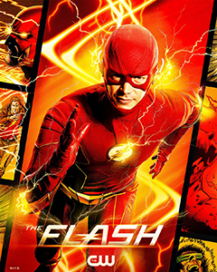

Sétima Temporada (2021)
Em 23 de fevereiro de 2020, a emissora The CW renovou a série para uma sétima temporada que estrou em 2 de março de 2021. A temporada segue Barry tentando parar Eva McCulloch e encontrar uma maneira de localizar sua esposa desaparecida Iris West-Allen. A sétima temporada teve seu episódio final exibido em 20 de Julho de 2021, contando com 18 episódios, o que significa que a 7ª temporada foi mais curta ainda.